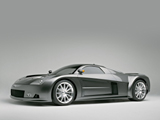

Chrysler ME Four-Twelve
Background

There were two ME Four-Twelve vehicles produced.
[2] The first was an auto show version using performance expertise from Daimler, but with limited operational capabilities.
It was designed behind-the-scenes during 2003 by a small team.[3]
The auto show vehicle, unveiled at the 2004 North American International Auto Show (NAIAS) in Detroit, took less than one year for design and development.
The exterior design was done by American Brian Nielander.[3]
Design
 The chassis tub of the ME Four-Twelve is carbon-fiber and aluminum honeycomb.
[6] It uses a 4130 steel rear subframe and aluminum castings. The body is lightweight carbon fiber. The low profile of the vehicle contributes to its aerodynamics, while multiple air-intakes enhance cooling.
The car uses 265/35ZR19 tires in the front and 335/30ZR20 tires in the rear (on 19- and 20-inch cast-aluminum wheels, respectively).
The brakes are six-piston-calipers with 16-inch discs at the front and back.
The chassis tub of the ME Four-Twelve is carbon-fiber and aluminum honeycomb.
[6] It uses a 4130 steel rear subframe and aluminum castings. The body is lightweight carbon fiber. The low profile of the vehicle contributes to its aerodynamics, while multiple air-intakes enhance cooling.
The car uses 265/35ZR19 tires in the front and 335/30ZR20 tires in the rear (on 19- and 20-inch cast-aluminum wheels, respectively).
The brakes are six-piston-calipers with 16-inch discs at the front and back.
 The ME 412's interior features leather seats, a carbon fiber dashboard, and a chrome-covered center console with a leather tilt steering wheel, and gunmetal gauges.
Other features include dual-zone climate control, a premium audio system, keyless access, and a push-button start system.
The ME 412's interior features leather seats, a carbon fiber dashboard, and a chrome-covered center console with a leather tilt steering wheel, and gunmetal gauges.
Other features include dual-zone climate control, a premium audio system, keyless access, and a push-button start system.